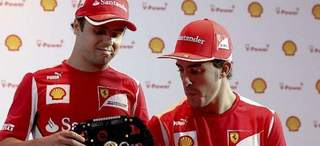

2012-11-19T18:55:52Z
Zan Tabak ficha como nuevo entrenador del Caja Laboral
Zan Tabak ficha como nuevo entrenador del Caja Laboral
EFE
El expívot croata ha firmado por lo que resta de temporada y un año más.
Sustituye a Dusko Ivanovic, que fue destituido de su cargo este domingo.
Tabak debutará este viernes en el partido de la Euroliga ante el Zalgiris.
El técnico croata Zan Tabak es el nuevo entrenador del Caja Laboral, después de que este domingo el club destituyera a Dusko Ivanovic tras la derrota de los vitorianos en casa frente al Blusens Monbus (68-77).Tabak (Split, Croacia, 1970) se ha comprometido con el club alavés por lo que resta de temporada y un año más, según ha informado el club en una nota.El nuevo entrenador llega a Vitoria procedente del equipo polaco Trefl Sopot.La carrera de Tabak en los banquillos ha estado ligada a Joan Plaza, como entrenador asistente, tanto en el Real Madrid como en el Cajasol. En la pasada temporada (2011-12) se convirtió en técnico del CB Sant Joseph de Girona en la LEB Oro. El Caja Laboral será el primer equipo en la ACB bajo sus órdenes.Una gran trayectoria como jugadorComo jugador, Tabak ganó tres Copas de Europa con la Jugoplastika y un anillo de la NBA con los Houston Rockets. Finalizó su carrera en la liga ACB, donde jugó en el Real Madrid, el DKV Juventut y el Unicaja de Málaga.El primer partido que el Caja Laboral disputará bajo la batuta del nuevo técnico será este viernes, cuando el equipo vitoriano se enfrente al Zalgiris en la Euroliga.El anterior técnico baskonista, Dusko Ivanovic, fue destituido después de que los vitorianos perdieran su octavo partido de los catorce disputados esta temporada entre la Liga Endesa y la Euroliga.Bajo la dirección de Ivanovic, que ha cumplido en Vitoria diez temporadas, el Caja Laboral ha logrado dos títulos de Liga, tres Copas del Rey y una Supercopa. Además, llevó al conjunto a disputar la Final a Cuatro de la Euroliga.
EFE
- El expívot croata ha firmado por lo que resta de temporada y un año más.
- Sustituye a Dusko Ivanovic, que fue destituido de su cargo este domingo.
- Tabak debutará este viernes en el partido de la Euroliga ante el Zalgiris.
El técnico croata Zan Tabak es el nuevo entrenador del Caja Laboral, después de que este domingo el club destituyera a Dusko Ivanovic tras la derrota de los vitorianos en casa frente al Blusens Monbus (68-77).
Tabak (Split, Croacia, 1970) se ha comprometido con el club alavés por lo que resta de temporada y un año más, según ha informado el club en una nota.
El nuevo entrenador llega a Vitoria procedente del equipo polaco Trefl Sopot.
La carrera de Tabak en los banquillos ha estado ligada a Joan Plaza, como entrenador asistente, tanto en el Real Madrid como en el Cajasol. En la pasada temporada (2011-12) se convirtió en técnico del CB Sant Joseph de Girona en la LEB Oro. El Caja Laboral será el primer equipo en la ACB bajo sus órdenes.
Una gran trayectoria como jugador
Como jugador, Tabak ganó tres Copas de Europa con la Jugoplastika y un anillo de la NBA con los Houston Rockets. Finalizó su carrera en la liga ACB, donde jugó en el Real Madrid, el DKV Juventut y el Unicaja de Málaga.
El primer partido que el Caja Laboral disputará bajo la batuta del nuevo técnico será este viernes, cuando el equipo vitoriano se enfrente al Zalgiris en la Euroliga.
El anterior técnico baskonista, Dusko Ivanovic, fue destituido después de que los vitorianos perdieran su octavo partido de los catorce disputados esta temporada entre la Liga Endesa y la Euroliga.
Bajo la dirección de Ivanovic, que ha cumplido en Vitoria diez temporadas, el Caja Laboral ha logrado dos títulos de Liga, tres Copas del Rey y una Supercopa. Además, llevó al conjunto a disputar la Final a Cuatro de la Euroliga.
2012-11-19T17:54:49Z
Ricky Rubio vuelve a entrenarse con los Minnesota Timberwolves
Ricky Rubio vuelve a entrenarse con los Minnesota Timberwolves
EFE
Se lesionó de gravedad en la rodilla izquierda hace más de ocho meses.
Está previsto que Ricky Rubio vuelve a jugar en el próximo mes de diciembre.
Los Timberwolves, que sufren una plaga de bajas, están deseando que vuelva.
Ricky Rubio, base español de los Minnesota Timberwolves, regresó a los entrenamientos con su equipo por primera vez desde que se lesionara en la rodilla izquierda el pasado 9 de marzo, aunque trabajó a un ritmo moderado, según informa la página web de la NBA.Se trata del primer paso del base español antes de su regreso a la competición, previsto para mediados de diciembre.La vuelta de Rubio a la dinámica de grupo fue acogida con optimismo por los responsables del equipo de Minnesota, ya que la plantilla sufre una plaga de bajas por lesión que ha mermado el rendimiento en el comienzo de la temporada en la NBA.Kevin Love, otro de los jugadores lesionados, también pisó el parqué con los Timberwolves, aunque su reaparición está prevista para los primeros días de diciembre.Rubio y Love realizaron ligeros ejercicios físicos y lanzamientos a canasta desde distintas posiciones.El base español se lesionó en un partido frente a Los Angeles Lakers. Lleva ya más de ocho meses de baja, en un periodo en el que no pudo disputar los Juegos Olímpicos de Londres.
EFE
- Se lesionó de gravedad en la rodilla izquierda hace más de ocho meses.
- Está previsto que Ricky Rubio vuelve a jugar en el próximo mes de diciembre.
- Los Timberwolves, que sufren una plaga de bajas, están deseando que vuelva.
Ricky Rubio, base español de los Minnesota Timberwolves, regresó a los entrenamientos con su equipo por primera vez desde que se lesionara en la rodilla izquierda el pasado 9 de marzo, aunque trabajó a un ritmo moderado, según informa la página web de la NBA.
Se trata del primer paso del base español antes de su regreso a la competición, previsto para mediados de diciembre.
La vuelta de Rubio a la dinámica de grupo fue acogida con optimismo por los responsables del equipo de Minnesota, ya que la plantilla sufre una plaga de bajas por lesión que ha mermado el rendimiento en el comienzo de la temporada en la NBA.
Kevin Love, otro de los jugadores lesionados, también pisó el parqué con los Timberwolves, aunque su reaparición está prevista para los primeros días de diciembre.
Rubio y Love realizaron ligeros ejercicios físicos y lanzamientos a canasta desde distintas posiciones.
El base español se lesionó en un partido frente a Los Angeles Lakers. Lleva ya más de ocho meses de baja, en un periodo en el que no pudo disputar los Juegos Olímpicos de Londres.
2012-11-19T16:55:25Z
Pau Gasol, tras alcanzar los 15.000 puntos: "Me siento muy orgulloso de mí mismo"
Pau Gasol, tras alcanzar los 15.000 puntos: "Me siento muy orgulloso de mí mismo"
EFE
El jugador de Los Angeles Lakers alcanzó los 15.000 puntos en la NBA.
Pau Gasol está muy orgulloso de sus éxitos en la liga norteamericana.
El español se ha convertido en el decimoséptimo jugador de la NBA en lograr al menos 15.000 puntos, 7.000 rebotes, 2.000 asistencias y 1.000 tapones.
Pau Gasol alcanzó los 15.000 puntos en su carrera en la NBA y dijo estar "muy orgulloso" de sí mismo por haber logrado esa cifra, solo al alcance de otros nueve jugadores no nacidos en Estados Unidos."Me siento orgulloso de mí mismo", dijo el español en los vestuarios del Staples Center. "Estoy contento y feliz de haber estado en la NBA lo suficiente como para haber producido tanto en estos años", añadió el jugador, que llegó a la liga norteamericana en la temporada 2001-02.Es el décimo jugador no nacido en Estados Unidos que lo consigue, tras Hakeem Olajuwon, Dominique Wilkins, Patrick Ewing, Dirk Nowitzki, Tim Duncan, Rolando Blackman, Steve Nash, Kiki Vandeweghe y Detlef Schrempf.El catalán también es el decimoséptimo jugador de la NBA con al menos 15.000 puntos, 7.000 rebotes, 2.000 asistencias y 1.000 tapones."Quiero seguir rindiendo así. Mi objetivo al llegar a la liga era tener éxito, ganarme el respeto de los demás y que la gente se sintiera orgullosa de mí. Siempre salgo a la pista con esas intenciones. He alcanzado esta cifra y me hace muy feliz", declaró el ala-pívot de Los Ángeles Lakers, que derrotaron a los Houston Rockets con una gran actuación de Kobe Bryant y Dwight Howard.Nueva era con D'Antoni"Mike D'Antoni aún no ha podido dirigirnos sobre la pista pero estamos poniendo en práctica sistemas suyos y jugando de forma libre y sencilla. Además Kobe Bryant está jugando sin ningún egoísmo y a un nivel excelente, involucrando a todos y siendo agresivo", indicó el internacional español.Los angelinos comenzaron la temporada con una victoria y cuatro derrotas, pero tras la destitución de Mike Brown han llegado los buenos resultados."Tenemos un mejor ritmo, sin tantas pausas, pero en defensa debemos ser más sólidos. En casa las cosas nos están saliendo bien pero fuera tenemos que ser más agresivos. Jugamos con muchos espacios y estamos tomando buenas decisiones", declaró.
EFE
- El jugador de Los Angeles Lakers alcanzó los 15.000 puntos en la NBA.
- Pau Gasol está muy orgulloso de sus éxitos en la liga norteamericana.
- El español se ha convertido en el decimoséptimo jugador de la NBA en lograr al menos 15.000 puntos, 7.000 rebotes, 2.000 asistencias y 1.000 tapones.

Pau Gasol alcanzó los 15.000 puntos en su carrera en la NBA y dijo estar "muy orgulloso" de sí mismo por haber logrado esa cifra, solo al alcance de otros nueve jugadores no nacidos en Estados Unidos.
"Me siento orgulloso de mí mismo", dijo el español en los vestuarios del Staples Center. "Estoy contento y feliz de haber estado en la NBA lo suficiente como para haber producido tanto en estos años", añadió el jugador, que llegó a la liga norteamericana en la temporada 2001-02.
Es el décimo jugador no nacido en Estados Unidos que lo consigue, tras Hakeem Olajuwon, Dominique Wilkins, Patrick Ewing, Dirk Nowitzki, Tim Duncan, Rolando Blackman, Steve Nash, Kiki Vandeweghe y Detlef Schrempf.
El catalán también es el decimoséptimo jugador de la NBA con al menos 15.000 puntos, 7.000 rebotes, 2.000 asistencias y 1.000 tapones.
"Quiero seguir rindiendo así. Mi objetivo al llegar a la liga era tener éxito, ganarme el respeto de los demás y que la gente se sintiera orgullosa de mí. Siempre salgo a la pista con esas intenciones. He alcanzado esta cifra y me hace muy feliz", declaró el ala-pívot de Los Ángeles Lakers, que derrotaron a los Houston Rockets con una gran actuación de Kobe Bryant y Dwight Howard.
Nueva era con D'Antoni
"Mike D'Antoni aún no ha podido dirigirnos sobre la pista pero estamos poniendo en práctica sistemas suyos y jugando de forma libre y sencilla. Además Kobe Bryant está jugando sin ningún egoísmo y a un nivel excelente, involucrando a todos y siendo agresivo", indicó el internacional español.
Los angelinos comenzaron la temporada con una victoria y cuatro derrotas, pero tras la destitución de Mike Brown han llegado los buenos resultados.
"Tenemos un mejor ritmo, sin tantas pausas, pero en defensa debemos ser más sólidos. En casa las cosas nos están saliendo bien pero fuera tenemos que ser más agresivos. Jugamos con muchos espacios y estamos tomando buenas decisiones", declaró.
2012-11-19T12:27:05Z
El Athletic denuncia la negativa de Fernando Llorente a salir en rueda de prensa
El Athletic denuncia la negativa de Fernando Llorente a salir en rueda de prensa
EP
Este lunes, estaba prevista su comparecencia ante los medios.
Es un nuevo capítulo en la situación que atraviesa el riojano en el club.
El Athletic de Bilbao ha denunciado la negativa de su delantero Fernando Llorente a comparecer en la rueda de prensa prevista para este lunes en la sala de prensa de Lezama, un nuevo capítulo en la incierta situación que atraviesa el riojano en el club rojiblanco. "Además de Aurtenetxe debería salir Fernando Llorente, pero Llorente se ha negado a salir", anunció el Athletic a través de su cuenta oficial en la red social Twitter (@AthleticClub).Habitualmente, en las ruedas de prensa del conjunto vasco suelen comparecer dos jugadores. "Termina la rueda de prensa. No comparece ningún otro jugador, tras la negativa de Fernando Llorente a comparecer ante los medios", reiteró el club una vez finalizada la rueda.Esta situación supone un episodio más en el reconocido desencuentro entre el Athletic y Fernando Llorente, que no esta temporada ha perdido la titularidad tras protagonizar un verano marcado por los continuos rumores de traspaso y su negativa a renovar el contrato que concluye el próximo verano.
EP
- Este lunes, estaba prevista su comparecencia ante los medios.
- Es un nuevo capítulo en la situación que atraviesa el riojano en el club.
El Athletic de Bilbao ha denunciado la negativa de su delantero Fernando Llorente a comparecer en la rueda de prensa prevista para este lunes en la sala de prensa de Lezama, un nuevo capítulo en la incierta situación que atraviesa el riojano en el club rojiblanco.
"Además de Aurtenetxe debería salir Fernando Llorente, pero Llorente se ha negado a salir", anunció el Athletic a través de su cuenta oficial en la red social Twitter (@AthleticClub).
Habitualmente, en las ruedas de prensa del conjunto vasco suelen comparecer dos jugadores. "Termina la rueda de prensa. No comparece ningún otro jugador, tras la negativa de Fernando Llorente a comparecer ante los medios", reiteró el club una vez finalizada la rueda.
Esta situación supone un episodio más en el reconocido desencuentro entre el Athletic y Fernando Llorente, que no esta temporada ha perdido la titularidad tras protagonizar un verano marcado por los continuos rumores de traspaso y su negativa a renovar el contrato que concluye el próximo verano.
2012-11-19T10:34:20Z
Domenicali, sobre la sanción a Massa: "Si trabajas para Ferrari, el equipo es lo primero"
Domenicali, sobre la sanción a Massa: "Si trabajas para Ferrari, el equipo es lo primero"
EFE
El equipo vio como una necesidad penalizar deliberadamente al brasileño.
Gracias a ello, Alonso pudo salir por la zona limpia en EE UU.
El jefe de Ferrari, Stefano Domenicali, justificó por necesidades del equipo la decisión de penalizar deliberadamente al brasileño Felipe Massa sustituyendo su caja de cambios a fin de que Fernando Alonso saliera, este domingo, por la zona limpia del circuito de Austin en el GP de Estados Unidos.El cambio en el coche de Massa le hizo perder cinco puestos en la parrilla, de forma que Alonso pasó del octavo al séptimo lugar. En la salida avanzó hasta el cuarto puesto y terminó la carrera tercero, por detrás del británico Lewis Hamilton y del líder del mundial, el alemán Sebastian Vettel.Domenicali no tiene ninguna duda de que la decisión fue correcta, de que cualquier otro equipo habría hecho lo mismo y de que estaba dentro del espíritu de las reglas."De otro modo, no lo habríamos hecho. Prefiero ser totalmente transparente. En una situación así se puede fácilmente simular algo, pero es mejor decir la verdad. Ese es nuestro estilo, mi estilo", declaró el jefe de Ferrari."Era nuestra responsabilidad", añadió, "porque sabíamos que la diferencia de agarre entre un lado y otro de la pista era muy grande, y si queríamos estar en la pelea en Brasil era muy importante tener al primer coche arriba en las dos primeras vueltas. En caso contrario la carrera habría prácticamente terminado".Domenicali piensa que la realidad les dio la razón. "A la vista de lo sucedido, creo que hicimos lo correcto. Cuando trabajas para Ferrari sabes que el equipo es el centro de las decisiones, y los pilotos lo respetan. Tengo que agradecérselo a Felipe (Massa)"."(Massa) Lo comprendió cuando le expliqué la decisión, y si algún jefe de equipo dice que no tomamos la decisión correcta, está mintiendo", afirmó.Domenicali confesó que en Ferrari llegaron a pensar en la posibilidad de que Red Bull hiciera algo parecido con su segundo piloto, el australiano Mark Webber, para que Alonso volviera a salir por la parte sucia del circuito."Esa es la razón por la que esperamos hasta el último momento para hacerlo. Es parte de la estrategia, parte del juego".El jefe de Ferrari reconoció que al tomar esa decisión no tuvo en cuenta que afectaba también a otros pilotos. "Para ser sincero, no pensé en ellos. Si dijera lo contrario nadie me creería, por eso digo que no".
EFE
- El equipo vio como una necesidad penalizar deliberadamente al brasileño.
- Gracias a ello, Alonso pudo salir por la zona limpia en EE UU.

El jefe de Ferrari, Stefano Domenicali, justificó por necesidades del equipo la decisión de penalizar deliberadamente al brasileño Felipe Massa sustituyendo su caja de cambios a fin de que Fernando Alonso saliera, este domingo, por la zona limpia del circuito de Austin en el GP de Estados Unidos.
El cambio en el coche de Massa le hizo perder cinco puestos en la parrilla, de forma que Alonso pasó del octavo al séptimo lugar. En la salida avanzó hasta el cuarto puesto y terminó la carrera tercero, por detrás del británico Lewis Hamilton y del líder del mundial, el alemán Sebastian Vettel.
Domenicali no tiene ninguna duda de que la decisión fue correcta, de que cualquier otro equipo habría hecho lo mismo y de que estaba dentro del espíritu de las reglas.
"De otro modo, no lo habríamos hecho. Prefiero ser totalmente transparente. En una situación así se puede fácilmente simular algo, pero es mejor decir la verdad. Ese es nuestro estilo, mi estilo", declaró el jefe de Ferrari.
"Era nuestra responsabilidad", añadió, "porque sabíamos que la diferencia de agarre entre un lado y otro de la pista era muy grande, y si queríamos estar en la pelea en Brasil era muy importante tener al primer coche arriba en las dos primeras vueltas. En caso contrario la carrera habría prácticamente terminado".
Domenicali piensa que la realidad les dio la razón. "A la vista de lo sucedido, creo que hicimos lo correcto. Cuando trabajas para Ferrari sabes que el equipo es el centro de las decisiones, y los pilotos lo respetan. Tengo que agradecérselo a Felipe (Massa)".
"(Massa) Lo comprendió cuando le expliqué la decisión, y si algún jefe de equipo dice que no tomamos la decisión correcta, está mintiendo", afirmó.
Domenicali confesó que en Ferrari llegaron a pensar en la posibilidad de que Red Bull hiciera algo parecido con su segundo piloto, el australiano Mark Webber, para que Alonso volviera a salir por la parte sucia del circuito.
"Esa es la razón por la que esperamos hasta el último momento para hacerlo. Es parte de la estrategia, parte del juego".
El jefe de Ferrari reconoció que al tomar esa decisión no tuvo en cuenta que afectaba también a otros pilotos. "Para ser sincero, no pensé en ellos. Si dijera lo contrario nadie me creería, por eso digo que no".
2012-11-19T08:50:56Z
Duro trabajo para Corretja la próxima temporada en la Davis
Duro trabajo para Corretja la próxima temporada en la Davis
EFE
Se abren incógnitas en el equipo español de Davis.
Grandes interrogantes, como la vuelta de Nadal y la continuidad de Ferrer.
El alicantino, saturado de tenis, ya quiso dejar el equipo este año.
Corretja no quiere hablar de una transición que parece clara.
España pierde la Davis ante la República Checa.
La derrota del equipo español de Copa Davis en la final número cien de esta competición en Praga, abre un interrogante en el futuro del equipo que capitanea Álex Corretja, que aunque no quiere hablar de transición sabe que tendrá trabajar de nuevo muy duro para recomponer la moral, maltrecha al ceder en el O2 Arena."Sí, si", dijo lacónicamente un saturado David Ferrer, al referirse a su compromiso con el equipo en el 2013, después de haberse exhibido contra Tomas Berdych en un partido que el propio Álex calificó como el mejor que había visto en su vida.Ferrer, con 76 victorias este año en 91 partidos, ha acabado saturado de tenis, deseando salir de vacaciones con su novia Marta hacia Estambul, y olvidar la raqueta durante un tiempo. Incluso medita cancelar una exhibición con el suizo Roger Federer en Brasil, para centrarse en sus compromisos oficiales en Doha y Auckland, donde defiende título, y luego en el Abierto de Australia.Con el regreso de Rafael Nadal todavía pendiente de confirmar, el duelo contra Canadá, del 1 al 3 de febrero en el primer cruce de la Davis del 2013, contra un equipo formado por Milos Raonic, Frank Dancevic, Daniel Nestor y Vasek Pospisil obligará a Álex y a su ayudante José María Arenas, a volver a utilizar sus dotes de mediación y sus recursos convincentes, para que Ferrer, siempre comprometido con el equipo, confirme ese sí dado en Praga."Esta derrota hay que olvidarla mañana y pensar en febrero en la eliminatoria que tenemos, de las más duras de la primera ronda, y tomárselo en serio, porque vamos a sufrir mucho", dijo sobre la próxima temporada.La historia puede repetirse de nuevo. En el 2011 tras ganar a Argentina en Sevilla, tanto Nadal como Ferrer, plantearon que el equipo debía sufrir una renovación, y prácticamente renunciaron a jugar más. Nadal mantuvo su postura, aunque también las lesiones influyeron en su caso. En el de David, Álex tocó su fibra sensible y le convenció durante su estancia en Melbourne.De esta forma eludió entonces Corretja la palabra transición, que no le gusta demasiado. "No me sirve lo de la transición con la cantidad y la calidad de los jugadores que tenemos, por eso me da pena esta derrota. Este equipo tiene que salir a ganar siempre. Podemos ganar en todo el mundo, hay otros que juegan muy bien, pero nosotros también en cualquier superficie y en cualquier condición. Yo me lo creo y mi trabajo es hacérselo creer a mis jugadores", dijo en la despedida de Praga.Muchos jugadores disponiblesAnte esta perspectiva, Corretja parece tener claro cuál es de nuevo su tarea. "La prioridad es tener siempre al máximo de jugadores disponibles, y eso incluye a Nadal, Verdasco, Marrero, Andujar y los cuatro que están aquí. Cuantos más mejor. Luego los capitanes decidiremos lo que sea mejor para el equipo, depende de los rivales y de la superficie", añadió.Algo bueno tiene el equipo español, un doble que aunque solo tiene una victoria y tres derrotas en Copa Davis, poco a poco ha ido adquiriendo solidez, ratificada con el título de dobles en el Masters de dobles.Queda para Corretja el tema de Almagro. En Praga confió en él porque no podía echarse atrás después de que el murciano se había ganado a pulso su comparecencia en la final con cinco victorias seguidas en la Davis y su décimo puesto del mundo. Pero en el O2 "Nico" cayó ante Berdych, algo dentro de lo admisible, y cedió ante el 37 del mundo, de cerca de 34 años, que llevaba ya dos días seguidos jugando, y seis horas y 17 minutos acumulados en sus piernas antes de ganar el último partido."Las vacaciones en casa, a disfrutar con mis sobrinos, y a recuperarme del hombro y de la rodilla, que parezco un cromo, y no se ni dónde comenzaré la temporada", dijo a EFE Almagro en los pasillos del O2, aún meditando una dura derrota, de la que quiere sacar una lectura positiva, o una lección para el futuro.
EFE
- Se abren incógnitas en el equipo español de Davis.
- Grandes interrogantes, como la vuelta de Nadal y la continuidad de Ferrer.
- El alicantino, saturado de tenis, ya quiso dejar el equipo este año.
- Corretja no quiere hablar de una transición que parece clara.
- España pierde la Davis ante la República Checa.
La derrota del equipo español de Copa Davis en la final número cien de esta competición en Praga, abre un interrogante en el futuro del equipo que capitanea Álex Corretja, que aunque no quiere hablar de transición sabe que tendrá trabajar de nuevo muy duro para recomponer la moral, maltrecha al ceder en el O2 Arena.
"Sí, si", dijo lacónicamente un saturado David Ferrer, al referirse a su compromiso con el equipo en el 2013, después de haberse exhibido contra Tomas Berdych en un partido que el propio Álex calificó como el mejor que había visto en su vida.
Ferrer, con 76 victorias este año en 91 partidos, ha acabado saturado de tenis, deseando salir de vacaciones con su novia Marta hacia Estambul, y olvidar la raqueta durante un tiempo. Incluso medita cancelar una exhibición con el suizo Roger Federer en Brasil, para centrarse en sus compromisos oficiales en Doha y Auckland, donde defiende título, y luego en el Abierto de Australia.
Con el regreso de Rafael Nadal todavía pendiente de confirmar, el duelo contra Canadá, del 1 al 3 de febrero en el primer cruce de la Davis del 2013, contra un equipo formado por Milos Raonic, Frank Dancevic, Daniel Nestor y Vasek Pospisil obligará a Álex y a su ayudante José María Arenas, a volver a utilizar sus dotes de mediación y sus recursos convincentes, para que Ferrer, siempre comprometido con el equipo, confirme ese sí dado en Praga.
"Esta derrota hay que olvidarla mañana y pensar en febrero en la eliminatoria que tenemos, de las más duras de la primera ronda, y tomárselo en serio, porque vamos a sufrir mucho", dijo sobre la próxima temporada.
La historia puede repetirse de nuevo. En el 2011 tras ganar a Argentina en Sevilla, tanto Nadal como Ferrer, plantearon que el equipo debía sufrir una renovación, y prácticamente renunciaron a jugar más. Nadal mantuvo su postura, aunque también las lesiones influyeron en su caso. En el de David, Álex tocó su fibra sensible y le convenció durante su estancia en Melbourne.
De esta forma eludió entonces Corretja la palabra transición, que no le gusta demasiado. "No me sirve lo de la transición con la cantidad y la calidad de los jugadores que tenemos, por eso me da pena esta derrota. Este equipo tiene que salir a ganar siempre. Podemos ganar en todo el mundo, hay otros que juegan muy bien, pero nosotros también en cualquier superficie y en cualquier condición. Yo me lo creo y mi trabajo es hacérselo creer a mis jugadores", dijo en la despedida de Praga.
Muchos jugadores disponibles
Ante esta perspectiva, Corretja parece tener claro cuál es de nuevo su tarea. "La prioridad es tener siempre al máximo de jugadores disponibles, y eso incluye a Nadal, Verdasco, Marrero, Andujar y los cuatro que están aquí. Cuantos más mejor. Luego los capitanes decidiremos lo que sea mejor para el equipo, depende de los rivales y de la superficie", añadió.
Algo bueno tiene el equipo español, un doble que aunque solo tiene una victoria y tres derrotas en Copa Davis, poco a poco ha ido adquiriendo solidez, ratificada con el título de dobles en el Masters de dobles.
Queda para Corretja el tema de Almagro. En Praga confió en él porque no podía echarse atrás después de que el murciano se había ganado a pulso su comparecencia en la final con cinco victorias seguidas en la Davis y su décimo puesto del mundo. Pero en el O2 "Nico" cayó ante Berdych, algo dentro de lo admisible, y cedió ante el 37 del mundo, de cerca de 34 años, que llevaba ya dos días seguidos jugando, y seis horas y 17 minutos acumulados en sus piernas antes de ganar el último partido.
"Las vacaciones en casa, a disfrutar con mis sobrinos, y a recuperarme del hombro y de la rodilla, que parezco un cromo, y no se ni dónde comenzaré la temporada", dijo a EFE Almagro en los pasillos del O2, aún meditando una dura derrota, de la que quiere sacar una lectura positiva, o una lección para el futuro.
2012-11-19T07:01:29Z
Arda da tres puntos de oro al Atlético en Granada
Arda da tres puntos de oro al Atlético en Granada
EFE / VÍDEO: ATLAS
El choque pudo dar una vuelta de tuerca con la expulsión de Suárez.
Todos los detalles del partido (0-1). | Clasificación.
El Atlético de Madrid no pierde la estela del líder de la Liga, el Barcelona, al ganar por 0-1 en el campo del Granada, con un gol del turco Arda Turan mediado el segundo tiempo, en un intenso e igualado encuentro en el que los locales no merecieron el castigo de la derrota. El turco Arda rompió el tedio en que se empezaba a convertir el choque con el 0-1, que llegó en un rápido ataque de los madrileños finalizado con un buen centro de Koke, que acababa de entrar al campo, y el remate a puerta vacía del otomano.El choque pudo dar una vuelta de tuerca en el minuto 70 con la expulsión por doble amarilla del visitante Suárez y los cambios ofensivos de Anquela, aunque el Atlético se defendió con orden y solo vio peligrar el triunfo con un inocente cabezazo del chileno Orellana que salió desviado.Con el Granada volcado, Koke y Falcao volvieron a fallar claras ocasiones para dejar sentenciado el choque, pero no les hizo falta a los de Simeone, extraordinarios en inferioridad para llevarse le victoria, seguir a tres puntos del Barça y mantener la renta de cinco con el Real Madrid.Ficha técnica:0 - Granada CF: Toño, Nyom, Siqueira, Diakhaté, Borja Gómez, Iriney (Juanma Ortiz, m.76), Mikel Rico, Brahimi (Ighalo, m.71), Torje (Orellana, m.71), Dani Benítez y El Arabi.1 - Atlético de Madrid: Courtois, Juanfran, Filipe Luis, Miranda, Godín, Suárez, Mario, Arda (Tiago, m.72), Raúl García (Koke, m.59), Adrián (Diego Costa, m.46) y Falcao.Gol: 0-1, m.60: ArdaÁrbitro: González González (Colegio Castellanoleonés). Expulsó por doble amarilla al visitante Mario (m.70). También mostró cartulina amarilla a los locales El Arabi, Iriney y Diakhaté, y a los visitantes Suárez, Godín, Diego Costa y Filipe Luis.Incidencias: Partido correspondiente a la duodécima jornada de Liga en Primera División disputado en Los Cármenes ante 22.500 espectadores. Lleno. Antes del inicio del encuentro se guardó un minuto de silencio por el reciente fallecimiento de la madre del entrenador del Granada CF, Juan Antonio Albacete Anquela.
EFE / VÍDEO: ATLAS
- El choque pudo dar una vuelta de tuerca con la expulsión de Suárez.
- Todos los detalles del partido (0-1). | Clasificación.
El Atlético de Madrid no pierde la estela del líder de la Liga, el Barcelona, al ganar por 0-1 en el campo del Granada, con un gol del turco Arda Turan mediado el segundo tiempo, en un intenso e igualado encuentro en el que los locales no merecieron el castigo de la derrota.
El turco Arda rompió el tedio en que se empezaba a convertir el choque con el 0-1, que llegó en un rápido ataque de los madrileños finalizado con un buen centro de Koke, que acababa de entrar al campo, y el remate a puerta vacía del otomano.
El choque pudo dar una vuelta de tuerca en el minuto 70 con la expulsión por doble amarilla del visitante Suárez y los cambios ofensivos de Anquela, aunque el Atlético se defendió con orden y solo vio peligrar el triunfo con un inocente cabezazo del chileno Orellana que salió desviado.
Con el Granada volcado, Koke y Falcao volvieron a fallar claras ocasiones para dejar sentenciado el choque, pero no les hizo falta a los de Simeone, extraordinarios en inferioridad para llevarse le victoria, seguir a tres puntos del Barça y mantener la renta de cinco con el Real Madrid.
Ficha técnica:
0 - Granada CF: Toño, Nyom, Siqueira, Diakhaté, Borja Gómez, Iriney (Juanma Ortiz, m.76), Mikel Rico, Brahimi (Ighalo, m.71), Torje (Orellana, m.71), Dani Benítez y El Arabi.
1 - Atlético de Madrid: Courtois, Juanfran, Filipe Luis, Miranda, Godín, Suárez, Mario, Arda (Tiago, m.72), Raúl García (Koke, m.59), Adrián (Diego Costa, m.46) y Falcao.
Gol: 0-1, m.60: Arda
Árbitro: González González (Colegio Castellanoleonés). Expulsó por doble amarilla al visitante Mario (m.70). También mostró cartulina amarilla a los locales El Arabi, Iriney y Diakhaté, y a los visitantes Suárez, Godín, Diego Costa y Filipe Luis.
Incidencias: Partido correspondiente a la duodécima jornada de Liga en Primera División disputado en Los Cármenes ante 22.500 espectadores. Lleno. Antes del inicio del encuentro se guardó un minuto de silencio por el reciente fallecimiento de la madre del entrenador del Granada CF, Juan Antonio Albacete Anquela.
2012-11-19T06:35:44Z
Bryant firma un triple-doble y Pau Gasol alcanza los 15.000 puntos
Bryant firma un triple-doble y Pau Gasol alcanza los 15.000 puntos
EFE
Victoria fácil del equipo angelino ante los Houston (119-108).
Pau es el décimo jugador no nacido en Estados Unidos que lo consigue.
Un excelso Calderón, clave en la victoria de los Raptors.
Los Ángeles Lakers siguen con su particular lavado de cara desde el fichaje del técnico Mike D'Antoni y dominaron por completo a los Houston Rockets (119-108) gracias a las sobresalientes actuaciones de Kobe Bryant y Dwight Howard en una noche histórica para Pau Gasol, que alcanzó los 15.000 puntos en la NBA.Bryant registró su decimoctavo triple-doble de su carrera con 22 puntos, 11 rebotes y 11 asistencias, mientras que Howard, con 28 tantos y 13 rebotes, confirmó que cada día se acerca más a un estado de forma óptimo. Por parte de los Rockets destacaron Chandler Parsons con 24 tantos y James Harden con 20 puntos y 7 asistencias.Además Gasol alcanzó la cifra de 15.000 puntos en la NBA con un tiro de cinco metros mediado el tercer cuarto. Es el décimo jugador no nacido en Estados Unidos que lo consigue, tras Hakeem Olajuwon, Dominique Wilkins, Patrick Ewing, Dirk Nowitzki, Tim Duncan, Rolando Blackman, Steve Nash, Kiki Vandeweghe y Detlef Schrempf.El español también es el decimoséptimo jugador de la NBA con al menos 15.000 puntos, 7.000 rebotes, 2.000 asistencias y 1.000 tapones.El duelo enfrentaba a Bryant y Harden, los dos máximos artilleros de la Liga, y al equipo más joven de la NBA (Houston) contra el cuarto más veterano.El huracán ofensivo de ambos equipos comenzó a cimentarse sobre un clinic de Howard en la zona (6/6 en tiros) y un festival de triples obra de Parsons y Harden, antes de que Bryant asumiera la responsabilidad en ataque y Lin los galones en la distribución del juego de los tejanos.Los angelinos, muy entonados en ataque, se fueron con ventaja al término del primer cuarto (40-29, anotando el 75 por ciento de los tiros) gracias a un pase desde la línea de fondo de World Peace -digno de un quarterback- culminado por Gasol y a la espectacular actuación de su líder, que firmaba por entonces 11 puntos, 7 rebotes y 5 asistencias.Houston tiró de fondo de armario y se aferró al encuentro mediante la aportación de Patrick Patterson y el novato Terrence Jones, que puso al Staples en pie con un tremendo mate sobre Jodie Meeks. Con un Harden dominante lograron recortar el déficit (59-55), pero los de Bernie Bickerstaff disfrutaban de un Howard pletórico que no perdonaba una sola asistencia de Bryant y Gasol y de un Darius Morris muy activo a ambos lados de la cancha.Tras el descanso (68-60), los Rockets volvieron a apretar con una mayor intensidad por parte de Omer Asik y Lin (73-69), pero la cesta que le dio la marca histórica a Gasol pareció enardecer a los suyos con un parcial de 12-0 (85-69) apuntalado por Bryant y la energía de Jordan Hill.Un triple de Morris dejó el resultado en 98-87 a falta de un cuarto, pero el vendaval de juego angelino no se detuvo ni con los reservas en pista. Un par de mates de Howard, el primero en contraataque y el segundo tras asistencia de Hill, provocaron el delirio en las gradas y dejaron el choque prácticamente decidido (109-90) con unos minutos finales repletos de espectáculo y una sensación de clara mejoría en las filas californianas.Ficha técnica:119 - Los Ángeles Lakers (40+28+30+21): Morris (12), Bryant (22), World Peace (15), Gasol (17), Howard (28) -cinco inicial-, Jamison (8), Hill (8), Meeks (3), Duhon (6) y Sacre (-).108 - Houston Rockets (29+31+27+21): Lin (5), Harden (20), Parsons (24), Patterson (14), Asik (8) -cinco inicial-, Morris (12), Jones (8), Aldrich (6), Douglas (5), Cook (-) y Smith (6).Gran CalderónEl base español de los Toronto Raptors, José Manuel Calderón, resultó clave en la victoria de su equipo ante Orlando Magic (86-97) al dar 18 asistencias su récord en la presente temporada y completar uno de sus mejores partidos desde que está en la NBA, al añadir también 9 puntos y 2 rebotes.
EFE
- Victoria fácil del equipo angelino ante los Houston (119-108).
- Pau es el décimo jugador no nacido en Estados Unidos que lo consigue.
- Un excelso Calderón, clave en la victoria de los Raptors.
Los Ángeles Lakers siguen con su particular lavado de cara desde el fichaje del técnico Mike D'Antoni y dominaron por completo a los Houston Rockets (119-108) gracias a las sobresalientes actuaciones de Kobe Bryant y Dwight Howard en una noche histórica para Pau Gasol, que alcanzó los 15.000 puntos en la NBA.
Bryant registró su decimoctavo triple-doble de su carrera con 22 puntos, 11 rebotes y 11 asistencias, mientras que Howard, con 28 tantos y 13 rebotes, confirmó que cada día se acerca más a un estado de forma óptimo. Por parte de los Rockets destacaron Chandler Parsons con 24 tantos y James Harden con 20 puntos y 7 asistencias.
Además Gasol alcanzó la cifra de 15.000 puntos en la NBA con un tiro de cinco metros mediado el tercer cuarto. Es el décimo jugador no nacido en Estados Unidos que lo consigue, tras Hakeem Olajuwon, Dominique Wilkins, Patrick Ewing, Dirk Nowitzki, Tim Duncan, Rolando Blackman, Steve Nash, Kiki Vandeweghe y Detlef Schrempf.
El español también es el decimoséptimo jugador de la NBA con al menos 15.000 puntos, 7.000 rebotes, 2.000 asistencias y 1.000 tapones.
El duelo enfrentaba a Bryant y Harden, los dos máximos artilleros de la Liga, y al equipo más joven de la NBA (Houston) contra el cuarto más veterano.
El huracán ofensivo de ambos equipos comenzó a cimentarse sobre un clinic de Howard en la zona (6/6 en tiros) y un festival de triples obra de Parsons y Harden, antes de que Bryant asumiera la responsabilidad en ataque y Lin los galones en la distribución del juego de los tejanos.
Los angelinos, muy entonados en ataque, se fueron con ventaja al término del primer cuarto (40-29, anotando el 75 por ciento de los tiros) gracias a un pase desde la línea de fondo de World Peace -digno de un quarterback- culminado por Gasol y a la espectacular actuación de su líder, que firmaba por entonces 11 puntos, 7 rebotes y 5 asistencias.
Houston tiró de fondo de armario y se aferró al encuentro mediante la aportación de Patrick Patterson y el novato Terrence Jones, que puso al Staples en pie con un tremendo mate sobre Jodie Meeks. Con un Harden dominante lograron recortar el déficit (59-55), pero los de Bernie Bickerstaff disfrutaban de un Howard pletórico que no perdonaba una sola asistencia de Bryant y Gasol y de un Darius Morris muy activo a ambos lados de la cancha.
Tras el descanso (68-60), los Rockets volvieron a apretar con una mayor intensidad por parte de Omer Asik y Lin (73-69), pero la cesta que le dio la marca histórica a Gasol pareció enardecer a los suyos con un parcial de 12-0 (85-69) apuntalado por Bryant y la energía de Jordan Hill.
Un triple de Morris dejó el resultado en 98-87 a falta de un cuarto, pero el vendaval de juego angelino no se detuvo ni con los reservas en pista. Un par de mates de Howard, el primero en contraataque y el segundo tras asistencia de Hill, provocaron el delirio en las gradas y dejaron el choque prácticamente decidido (109-90) con unos minutos finales repletos de espectáculo y una sensación de clara mejoría en las filas californianas.
Ficha técnica:
119 - Los Ángeles Lakers (40+28+30+21): Morris (12), Bryant (22), World Peace (15), Gasol (17), Howard (28) -cinco inicial-, Jamison (8), Hill (8), Meeks (3), Duhon (6) y Sacre (-).
108 - Houston Rockets (29+31+27+21): Lin (5), Harden (20), Parsons (24), Patterson (14), Asik (8) -cinco inicial-, Morris (12), Jones (8), Aldrich (6), Douglas (5), Cook (-) y Smith (6).
Gran Calderón
El base español de los Toronto Raptors, José Manuel Calderón, resultó clave en la victoria de su equipo ante Orlando Magic (86-97) al dar 18 asistencias su récord en la presente temporada y completar uno de sus mejores partidos desde que está en la NBA, al añadir también 9 puntos y 2 rebotes.
2012-11-18T21:40:22Z
Fernando Alonso: "No nos vamos a rendir hasta la bandera a cuadros"
Fernando Alonso: "No nos vamos a rendir hasta la bandera a cuadros"
EFE
El piloto español de Ferrari finalizó tercero en el G.P. de Estados Unidos.
Tiene 13 puntos de desventaja sobre Vettel de cara a la última carrera en Brasil.
Victoria de Lewis Hamilton, y el alemán es más líder del Mundial.
GRÁFICO: Todo el Mundial de Fórmula 1, en datos
El español Fernando Alonso (Ferrari) declaró tras acabar tercero en el Gran Premio de Estados Unidos que llega al de Brasil, que se disputa la semana que viene en Sao Paulo, "con todas las posibilidades del mundo" de ganar el título Mundial.Alonso cedió solo tres puntos con respecto al líder del campeonato, el alemán Sebastian Vettel (Red Bull), que se clasificó segundo tras el británico Lewis Hamilton (McLaren-Mercedes), y llega a Sao Paulo con un margen de trece puntos sobre el español. "Ha sido otro día muy bueno para nosotros, en el que hemos intentado salvar los muebles después de un fin de semana difícil, ya que no fuimos rápidos ni el viernes, ni el sábado, ni luego en la calificación", dijo el español e la rueda de prensa posterior a la carrera.Al hablar de la carrera, el asturiano comentó que en la primera vuelta se jugaba de nuevo todo. "Teníamos que ganar muchas posiciones para tratar de colocarnos terceros o cuartos, o, de los contrario, caer hasta el noveno o el décimo puesto. Tuvimos suerte de adelantar posiciones", dijo en el Circuito de las Américas, en Austin (Texas).Nadie lo esperaba"Creo que perder tres puntos con respecto a Sebastian en un fin de semana en el que no íbamos rápidos y ellos prácticamente volaban es algo positivo. Llegamos a Brasil con todas las posibilidades del mundo. Ellos (Red Bull) han tenido un problema con uno de sus coches (el del australiano Mark Webber, que abandonó por una avería en el alternador). Igual esto cambia algún día y podemos aprovecharlo. La distancia no se ha abierto demasiado", agregó el bicampeón mundial español. "Vamos a pensar que todavía es posible. Ganaremos, perderemos, pero no nos vamos a rendir hasta la bandera a cuadros", comentó con optimismo el piloto español de Ferrari.Alonso agregó que sabía que tenía que "mantener el Mundial vivo en las primeras vueltas". "Solemos ponernos terceros o cuartos en las primeras vueltas, y desde esa posición es más fácil si te colocas en el grupo delantero. Hoy había una buena posibilidad. El ritmo mejora el domingo, y aunque estos Hamilton y Vettel estaban muy por delante, nosotros teníamos que mantenernos por delante de los demás", señaló. Alonso cree que este podio "es como una victoria" para su equipo. "Perder tres puntos es algo que nadie pensaba", comentó el español.El alemán Sebastian Vettel (Red Bull), ganador de los últimos dos Mundiales de Fórmula 1 y líder del actual, que fue segundo en el Gran Premio de Estados Unidos, declaró que "tras la carrera de hoy, el Mundial parece un poco mejor".
EFE
- El piloto español de Ferrari finalizó tercero en el G.P. de Estados Unidos.
- Tiene 13 puntos de desventaja sobre Vettel de cara a la última carrera en Brasil.
- Victoria de Lewis Hamilton, y el alemán es más líder del Mundial.
-
GRÁFICO: Todo el Mundial de Fórmula 1, en datos
El español Fernando Alonso (Ferrari) declaró tras acabar tercero en el Gran Premio de Estados Unidos que llega al de Brasil, que se disputa la semana que viene en Sao Paulo, "con todas las posibilidades del mundo" de ganar el título Mundial.
Alonso cedió solo tres puntos con respecto al líder del campeonato, el alemán Sebastian Vettel (Red Bull), que se clasificó segundo tras el británico Lewis Hamilton (McLaren-Mercedes), y llega a Sao Paulo con un margen de trece puntos sobre el español. "Ha sido otro día muy bueno para nosotros, en el que hemos intentado salvar los muebles después de un fin de semana difícil, ya que no fuimos rápidos ni el viernes, ni el sábado, ni luego en la calificación", dijo el español e la rueda de prensa posterior a la carrera.
Al hablar de la carrera, el asturiano comentó que en la primera vuelta se jugaba de nuevo todo. "Teníamos que ganar muchas posiciones para tratar de colocarnos terceros o cuartos, o, de los contrario, caer hasta el noveno o el décimo puesto. Tuvimos suerte de adelantar posiciones", dijo en el Circuito de las Américas, en Austin (Texas).
Nadie lo esperaba
"Creo que perder tres puntos con respecto a Sebastian en un fin de semana en el que no íbamos rápidos y ellos prácticamente volaban es algo positivo. Llegamos a Brasil con todas las posibilidades del mundo. Ellos (Red Bull) han tenido un problema con uno de sus coches (el del australiano Mark Webber, que abandonó por una avería en el alternador). Igual esto cambia algún día y podemos aprovecharlo. La distancia no se ha abierto demasiado", agregó el bicampeón mundial español.
"Vamos a pensar que todavía es posible. Ganaremos, perderemos, pero no nos vamos a rendir hasta la bandera a cuadros", comentó con optimismo el piloto español de Ferrari.
Alonso agregó que sabía que tenía que "mantener el Mundial vivo en las primeras vueltas". "Solemos ponernos terceros o cuartos en las primeras vueltas, y desde esa posición es más fácil si te colocas en el grupo delantero. Hoy había una buena posibilidad. El ritmo mejora el domingo, y aunque estos Hamilton y Vettel estaban muy por delante, nosotros teníamos que mantenernos por delante de los demás", señaló. Alonso cree que este podio "es como una victoria" para su equipo. "Perder tres puntos es algo que nadie pensaba", comentó el español.
El alemán Sebastian Vettel (Red Bull), ganador de los últimos dos Mundiales de Fórmula 1 y líder del actual, que fue segundo en el Gran Premio de Estados Unidos, declaró que "tras la carrera de hoy, el Mundial parece un poco mejor".
2012-11-18T19:35:46Z
El Baskonia destituye a Dusko Ivanovic como técnico
El Baskonia destituye a Dusko Ivanovic como técnico
EFE
Agradece su estancia en el club en una "década maravillosa".
No esperaba su relevo en el banquillo, y no quiso "entrar en razones".
El presidente de Saski Baskonia, Josean Querejeta, ha anunciado la decisión de prescindir del técnico Dusko Ivanovic tras la derrota ante Blusens Monbus. Además de la derrota ante el equipo gallego, la "mala imagen" de un equipo que juega "cada día peor" y unos jugadores "estresados" han sido la razones para llevar a cabo el relevo en el banquillo minutos después de consumar la tercera derrota en Liga Endesa.Josean Querejeta ha remarcado la trayectoria "muy negativa" del Baskonia con una imagen "nefasta" en la Euroliga para intentar dar una "orientación y reactivación" de la plantilla.Una "década maravillosa"El técnico ha comparecido en la sala de prensa del Buesa Arena minutos después de dejar de ser técnico de Caja Laboral y se ha mostrado agradecido por los diez años maravillosos que ha pasado en Vitoria. El preparador montenegrino, con semblante serio, ha sido breve en su discurso para "agradecer" su estancia como máximo responsable baskonista en una década "maravillosa" en la que ha alabado a la "afición, jugadores y la ciudad".A pesar de la trayectoria del equipo en los últimos partidos y de estar cuestionado por la grada Ivanovic ha admitido "no esperar" su relevo en el banquillo, aunque se ha mostrado comprensivo y ha asegurado que entiende la decisión que ha tomado Josean Querejeta.A la hora de analizar y expresar las causas que han llevado a su salida del banquillo ha dicho que no quiere "entrar en razones", porque todo aquello que piensa sobre el equipo lo dice y expresa en los "sitios adecuados", ha remarcado.Su deterioro en la relación con el juego del equipo y la crispación en la grada han sido también determinantes aunque Ivanovic se ha mostrado "más preocupado que nadie" por la errática trayectoria. "A pocos más que a mí le importaba cómo iba el equipo", ha enfatizado.
EFE
- Agradece su estancia en el club en una "década maravillosa".
- No esperaba su relevo en el banquillo, y no quiso "entrar en razones".
El presidente de Saski Baskonia, Josean Querejeta, ha anunciado la decisión de prescindir del técnico Dusko Ivanovic tras la derrota ante Blusens Monbus. Además de la derrota ante el equipo gallego, la "mala imagen" de un equipo que juega "cada día peor" y unos jugadores "estresados" han sido la razones para llevar a cabo el relevo en el banquillo minutos después de consumar la tercera derrota en Liga Endesa.
Josean Querejeta ha remarcado la trayectoria "muy negativa" del Baskonia con una imagen "nefasta" en la Euroliga para intentar dar una "orientación y reactivación" de la plantilla.
Una "década maravillosa"
El técnico ha comparecido en la sala de prensa del Buesa Arena minutos después de dejar de ser técnico de Caja Laboral y se ha mostrado agradecido por los diez años maravillosos que ha pasado en Vitoria. El preparador montenegrino, con semblante serio, ha sido breve en su discurso para "agradecer" su estancia como máximo responsable baskonista en una década "maravillosa" en la que ha alabado a la "afición, jugadores y la ciudad".
A pesar de la trayectoria del equipo en los últimos partidos y de estar cuestionado por la grada Ivanovic ha admitido "no esperar" su relevo en el banquillo, aunque se ha mostrado comprensivo y ha asegurado que entiende la decisión que ha tomado Josean Querejeta.
A la hora de analizar y expresar las causas que han llevado a su salida del banquillo ha dicho que no quiere "entrar en razones", porque todo aquello que piensa sobre el equipo lo dice y expresa en los "sitios adecuados", ha remarcado.
Su deterioro en la relación con el juego del equipo y la crispación en la grada han sido también determinantes aunque Ivanovic se ha mostrado "más preocupado que nadie" por la errática trayectoria. "A pocos más que a mí le importaba cómo iba el equipo", ha enfatizado.
2012-11-19T18:17:56Z
Montezemolo: "Vamos a luchar hasta la última vuelta para que Fernando Alonso sea campeón"
Montezemolo: "Vamos a luchar hasta la última vuelta para que Fernando Alonso sea campeón"
EP
El presidente de Ferrari confía en que Alonso sea campeón en Brasil.
El español necesita casi un milagro para ganar el Mundial de Fórmula 1.
Este domingo se decide el campeonato en el GP de Brasil (17.00 horas).
El presidente de Ferrari, Luca Cordero di Montezemolo, ha querido lanzar un último mensaje de aliento antes del Gran Premio de Brasil, que decidirá el Mundial de Fórmula 1 el próximo fin de semana entre Sebastian Vettel y Fernando Alonso, y ha avisado de que en la escudería italiana planear "luchar hasta el último kilómetro de la última vuelta"."Vamos a Sao Paulo con la voluntad de ganar, sabiendo que vamos a luchar hasta el último kilómetro de la última vuelta de la carrera en Interlagos. Sé que va a ser muy duro, pero todos nosotros creemos que podemos hacerlo", animó Montezemolo en la web oficial de Ferrari.El italiano aseguró que en la marca italiana deben "estar orgullosos" de lo que han "logrado hasta ahora". "Durante los últimos 16 años, con muy pocas excepciones, nos hemos acostumbrado a llegar a la fase final del campeonato en esta situación y aquí estamos de nuevo en esta temporada. Cualquiera que sea el resultado, hemos sido contendientes", recordó.Sin embargo, Montezomolo avisó de que "el orgullo no es suficiente". "Queremos ganar. En Austin el equipo una vez más hizo un trabajo perfecto como sus dos pilotos. Fernando (Alonso) llegó al podio una vez más y Felipe (Massa) hizo una carrera fantástica, además de demostrar una vez más que es un jugador de equipo", ensalzó.
EP
- El presidente de Ferrari confía en que Alonso sea campeón en Brasil.
- El español necesita casi un milagro para ganar el Mundial de Fórmula 1.
- Este domingo se decide el campeonato en el GP de Brasil (17.00 horas).
El presidente de Ferrari, Luca Cordero di Montezemolo, ha querido lanzar un último mensaje de aliento antes del Gran Premio de Brasil, que decidirá el Mundial de Fórmula 1 el próximo fin de semana entre Sebastian Vettel y Fernando Alonso, y ha avisado de que en la escudería italiana planear "luchar hasta el último kilómetro de la última vuelta".
"Vamos a Sao Paulo con la voluntad de ganar, sabiendo que vamos a luchar hasta el último kilómetro de la última vuelta de la carrera en Interlagos. Sé que va a ser muy duro, pero todos nosotros creemos que podemos hacerlo", animó Montezemolo en la web oficial de Ferrari.
El italiano aseguró que en la marca italiana deben "estar orgullosos" de lo que han "logrado hasta ahora". "Durante los últimos 16 años, con muy pocas excepciones, nos hemos acostumbrado a llegar a la fase final del campeonato en esta situación y aquí estamos de nuevo en esta temporada. Cualquiera que sea el resultado, hemos sido contendientes", recordó.
Sin embargo, Montezomolo avisó de que "el orgullo no es suficiente". "Queremos ganar. En Austin el equipo una vez más hizo un trabajo perfecto como sus dos pilotos. Fernando (Alonso) llegó al podio una vez más y Felipe (Massa) hizo una carrera fantástica, además de demostrar una vez más que es un jugador de equipo", ensalzó.
2012-11-19T17:24:31Z
Odriozola, cerca de otro mandato en la Federación de Atletismo
Odriozola, cerca de otro mandato en la Federación de Atletismo
20MINUTOS.ES
Los resultados de las elecciones a la asamblea de la RFEA, favorables.
Una estimación de su entorno le garantiza 97 votos sobre un total de 150.
El nuevo presidente será elegido el próximo 16 de diciembre.
Configurada la nueva asamblea de la Federación Española de Atletismo (RFEA) que el día 16 de diciembre votará a su nuevo presidente, dos de las tres precandidaturas valoran los resultados de la votación. "Tal y como ha quedado, parece que todo va a estar muy igualado", indica Martín Fiz, integrado en la lista que encabezan el exatleta Fermín Cacho y el directivo Alfredo Guerisoli. "Es difícil superar a José María Odriozola y tendremos que ver cómo enfocamos nuestros objetivos. Tenemos apoyos, pero no sabemos si van a ser los necesarios"."Hemos obtenido un resultado excelente, estamos muy contentos. Las fuentes oficiales (en alusión a la precandidatura de Odriozola) dicen una cosa, pero también decían que ni siquiera iba a haber elecciones. Al menos ya me reconocen 37 votos", explica el precandidato Vicente Añó.Una vez votada la asamblea, Odriozola, Añó y la 'entente' Cacho-Fiz-Guerisoli deben reunir los avales necesarios (un 15% entre los miembros, hasta 22 votos) para oficializar sus candidaturas a la presencia. "Hay bastante gente partidaria de un cambio", manifiesta Añó, que cuenta con dos apoyos electos en la asamblea: el entrenador José Luis López y el atleta Jesús Ángel García Bragado. El próximo mes resultará intenso en busca de soportes y votos.¿Muchas candidaturas?"Somos los que tenemos la llave para una balanza que se puede decantar de un lado o de otro y como se hace en política, habrá que negociar", valora un Fiz que cree que "tres candidaturas son muchas". Sobre esta apuesta, el 'rival' Añó esboza un posible apoyo: "Es posible que Miguel Ángel Mostaza, que ha sido su mánager, le vote, o algún atleta o algún club, pero no tiene posibilidades reales".En la candidatura de Odriozola se da por hecho el triunfo del actual presidente, a la vista de la composición de la asamblea. Según sus cálculos, 97 votarían a Odriozola, 26 a Vicente Añó y 23 permanecerían indecisos, un número insuficiente incluso con la fusión de dos de las precandidaturas. Odriozola afrontaría su séptimo mandato consecutivo y se consolidaría como la persona que más tiempo ha ejercido el cargo.
20MINUTOS.ES
- Los resultados de las elecciones a la asamblea de la RFEA, favorables.
- Una estimación de su entorno le garantiza 97 votos sobre un total de 150.
- El nuevo presidente será elegido el próximo 16 de diciembre.

Configurada la nueva asamblea de la Federación Española de Atletismo (RFEA) que el día 16 de diciembre votará a su nuevo presidente, dos de las tres precandidaturas valoran los resultados de la votación. "Tal y como ha quedado, parece que todo va a estar muy igualado", indica Martín Fiz, integrado en la lista que encabezan el exatleta Fermín Cacho y el directivo Alfredo Guerisoli. "Es difícil superar a José María Odriozola y tendremos que ver cómo enfocamos nuestros objetivos. Tenemos apoyos, pero no sabemos si van a ser los necesarios".
"Hemos obtenido un resultado excelente, estamos muy contentos. Las fuentes oficiales (en alusión a la precandidatura de Odriozola) dicen una cosa, pero también decían que ni siquiera iba a haber elecciones. Al menos ya me reconocen 37 votos", explica el precandidato Vicente Añó.
Una vez votada la asamblea, Odriozola, Añó y la 'entente' Cacho-Fiz-Guerisoli deben reunir los avales necesarios (un 15% entre los miembros, hasta 22 votos) para oficializar sus candidaturas a la presencia. "Hay bastante gente partidaria de un cambio", manifiesta Añó, que cuenta con dos apoyos electos en la asamblea: el entrenador José Luis López y el atleta Jesús Ángel García Bragado. El próximo mes resultará intenso en busca de soportes y votos.
¿Muchas candidaturas?
"Somos los que tenemos la llave para una balanza que se puede decantar de un lado o de otro y como se hace en política, habrá que negociar", valora un Fiz que cree que "tres candidaturas son muchas". Sobre esta apuesta, el 'rival' Añó esboza un posible apoyo: "Es posible que Miguel Ángel Mostaza, que ha sido su mánager, le vote, o algún atleta o algún club, pero no tiene posibilidades reales".
En la candidatura de Odriozola se da por hecho el triunfo del actual presidente, a la vista de la composición de la asamblea. Según sus cálculos, 97 votarían a Odriozola, 26 a Vicente Añó y 23 permanecerían indecisos, un número insuficiente incluso con la fusión de dos de las precandidaturas. Odriozola afrontaría su séptimo mandato consecutivo y se consolidaría como la persona que más tiempo ha ejercido el cargo.
2012-11-19T16:06:01Z
Cesc: "El frío y el césped no serán ningún problema"
Cesc: "El frío y el césped no serán ningún problema"
EFE
El Barça se enfrenta este martes al Spartak en Moscú en la Champions.
Cesc no cree que el frío, unos cero grados, sea un problema para el equipo.
Tampoco considera un problema que el campo sea de césped artificial.
El centrocampista del FC Barcelona Cesc Fábregas afirmó que el "frío no será ningún problema" en el partido de la Liga de Campeones, este martes con el Spartak de Moscú, que se disputará en la capital rusa, con una temperatura de aproximadamente 0 grados."Estamos acostumbrados", dijo Fábregas en rueda de prensa, tras recordar que recientemente él y muchos de sus compañeros jugaron con la selección española en Bielorrusia (0-4), donde también se registran bajas temperaturas.También restó importancia a que el choque con el equipo moscovita se dispute sobre el césped artificial del estadio olímpico Luzhnikí y aseguró que el entrenamiento de este lunes por la tarde bastará para ver cómo bota el balón.Cesc tuvo palabras de elogio para el rival al señalar que el equipo moscovita es "táctica y físicamente muy duro" y que tiene jugadores importantes en el centro del campo."El Spartak gustó mucho en el Camp Nou", agregó en alusión a la batalla que presentó en el primer partido donde cayó 3-2Recalcó que el Barcelona saldrá a buscar la victoria en Luzhniki. "No nos vale el empate, queremos ganar para clasificarnos como primeros de grupo", dijo.Fábregas destacó la importancia del regreso del capitán catalán, Carles Puyol, recuperado de su lesión, y añadió sobre su compañero: "Pasa el tiempo y cada vez juega mejor".
EFE
- El Barça se enfrenta este martes al Spartak en Moscú en la Champions.
- Cesc no cree que el frío, unos cero grados, sea un problema para el equipo.
- Tampoco considera un problema que el campo sea de césped artificial.
El centrocampista del FC Barcelona Cesc Fábregas afirmó que el "frío no será ningún problema" en el partido de la Liga de Campeones, este martes con el Spartak de Moscú, que se disputará en la capital rusa, con una temperatura de aproximadamente 0 grados.
"Estamos acostumbrados", dijo Fábregas en rueda de prensa, tras recordar que recientemente él y muchos de sus compañeros jugaron con la selección española en Bielorrusia (0-4), donde también se registran bajas temperaturas.
También restó importancia a que el choque con el equipo moscovita se dispute sobre el césped artificial del estadio olímpico Luzhnikí y aseguró que el entrenamiento de este lunes por la tarde bastará para ver cómo bota el balón.
Cesc tuvo palabras de elogio para el rival al señalar que el equipo moscovita es "táctica y físicamente muy duro" y que tiene jugadores importantes en el centro del campo.
"El Spartak gustó mucho en el Camp Nou", agregó en alusión a la batalla que presentó en el primer partido donde cayó 3-2
Recalcó que el Barcelona saldrá a buscar la victoria en Luzhniki. "No nos vale el empate, queremos ganar para clasificarnos como primeros de grupo", dijo.
Fábregas destacó la importancia del regreso del capitán catalán, Carles Puyol, recuperado de su lesión, y añadió sobre su compañero: "Pasa el tiempo y cada vez juega mejor".
2012-11-19T11:46:28Z
Emery: "Nuestra misión es ganar al Barcelona"
Emery: "Nuestra misión es ganar al Barcelona"
EFE
El técnico del Spartak confía en sus posibilidades para doblegar al Barça.
"Si ganamos al Barcelona le complicaremos la vida", dice el español.
Este martes, Spartak-Barça en la liguilla de la Champions.
El técnico del Spartak Moscú, el español Unai Emery, aseguró que su equipo buscará la victoria ante el todopoderoso Barcelona para mantener vivas sus opciones de clasificarse para la fase de eliminatorias de la Liga de Campeones."La derrota en Glasgow ha complicado a los catalanes el pase a la siguiente fase. El partido se presenta duro. Sea como sea, nuestra misión es ganar", afirmó Emery en rueda de prensa en el estadio olímpico Luzhnikí (78.000 asientos), escenario del partido.Emery, que asumió hace cinco meses las riendas del club más laureado de Rusia, destacó que el equipo moscovita no renuncia ni al segundo ni al tercer puesto, que da opción a la disputa de la Liga Europa."Si ganamos al Barcelona le complicaremos la vida. Saldremos al campo con esa idea. Intentaremos aprovechar las opciones que tengamos durante el partido", señaló.El técnico vasco subrayó que el Spartak no modificará su forma de jugar pese a las numerosas bajas y se mostró optimista, ya que subrayó que el conjunto ruso también es un "equipo fuerte".Maltratados por las lesiones"Nuestros futbolistas han sufrido lesiones una tras otra. Esto es una realidad. Pero con el once titular no está todo tan mal. Intentaremos arreglárnoslas con los que tenemos. Y pensar no en los que no están, sino en los que salten al campo", dijo.Emery reconoció que además de las bajas ya conocidas por lesión (Romulo, Rebrov, Bylyaletdínov) o descalificación (Pareja), el interior irlandés McGueady y el delantero ruso Dziuba tampoco podrán enfrentarse al equipo catalán al no haber superado las molestias físicas que arrastraban.El Spartak es el colista del grupo con sólo tres puntos, por lo que tendría que ganar los dos últimos partidos de la "Champions" para tener alguna posibilidad de pasar a la siguiente fase.
EFE
- El técnico del Spartak confía en sus posibilidades para doblegar al Barça.
- "Si ganamos al Barcelona le complicaremos la vida", dice el español.
- Este martes, Spartak-Barça en la liguilla de la Champions.
El técnico del Spartak Moscú, el español Unai Emery, aseguró que su equipo buscará la victoria ante el todopoderoso Barcelona para mantener vivas sus opciones de clasificarse para la fase de eliminatorias de la Liga de Campeones.
"La derrota en Glasgow ha complicado a los catalanes el pase a la siguiente fase. El partido se presenta duro. Sea como sea, nuestra misión es ganar", afirmó Emery en rueda de prensa en el estadio olímpico Luzhnikí (78.000 asientos), escenario del partido.
Emery, que asumió hace cinco meses las riendas del club más laureado de Rusia, destacó que el equipo moscovita no renuncia ni al segundo ni al tercer puesto, que da opción a la disputa de la Liga Europa.
"Si ganamos al Barcelona le complicaremos la vida. Saldremos al campo con esa idea. Intentaremos aprovechar las opciones que tengamos durante el partido", señaló.
El técnico vasco subrayó que el Spartak no modificará su forma de jugar pese a las numerosas bajas y se mostró optimista, ya que subrayó que el conjunto ruso también es un "equipo fuerte".
Maltratados por las lesiones
"Nuestros futbolistas han sufrido lesiones una tras otra. Esto es una realidad. Pero con el once titular no está todo tan mal. Intentaremos arreglárnoslas con los que tenemos. Y pensar no en los que no están, sino en los que salten al campo", dijo.
Emery reconoció que además de las bajas ya conocidas por lesión (Romulo, Rebrov, Bylyaletdínov) o descalificación (Pareja), el interior irlandés McGueady y el delantero ruso Dziuba tampoco podrán enfrentarse al equipo catalán al no haber superado las molestias físicas que arrastraban.
El Spartak es el colista del grupo con sólo tres puntos, por lo que tendría que ganar los dos últimos partidos de la "Champions" para tener alguna posibilidad de pasar a la siguiente fase.
2012-11-19T09:52:51Z
Agüero: "Ante el Real Madrid, saldremos a ganar como sea"
Agüero: "Ante el Real Madrid, saldremos a ganar como sea"
20MINUTOS.ES / EP
El equipo inglés se juega sus últimas opciones en Champions.
El delantero no jugó en el Bernabéu y ahora, en racha, amenaza al Madrid.
El Real Madrid y el Manchester City tienen el miércoles un importante compromisos de cara a sus aspiraciones en la Liga de Campeones.El Kun Agüero, que sigue en la órbita del equipo merengue, avisa de que irán a por todas para ganar a los de Mourinho. "Tenemos una semana muy complicada, con el Real Madrid primero y el domingo ante el Chelsea. Este tipo de encuentros son muy bonitos de jugar. Eso sí, tenemos que ganar. Vamos a salir a ganar al Madrid como sea, lo necesitamos", afirma el delantero.El ariete, que viene de marcar dos goles el pasado fin de semana en la goleada ante el Aston Villa (5-0), no puedo jugar en el primer encuentro, en el Bernabéu, y sabe que el City se ha complicado y ya no depende de sí mismo: "Lo importante es sumar tres puntos y después ya veremos los demás resultados. Pero primero, el Madrid".Su historial de partidos jugados ante los blancos no es muy alentador, ya que nunca les ha ganado. "No haber ganado nunca al Real Madrid como atlético no me influye, el Atlético no le ha ganado en muchos años, pero si pude marcar contra ellos a pesar de no haber ganado nunca. Espero romper esa racha el miércoles", señaló."Siempre es especial jugar contra un club como el Real Madrid. Personalmente, mi pasado en el Atlético de Madrid le da un toque adicional, pero eso no influye en las ganas que tengo de ganar este partidoEn el grupo D, el Borussia es líder con 8 puntos, seguido por el Madrid, con 7, y el Ajax, con 4. Cierra el grupo el City, con solo 2 puntos.
20MINUTOS.ES / EP
- El equipo inglés se juega sus últimas opciones en Champions.
- El delantero no jugó en el Bernabéu y ahora, en racha, amenaza al Madrid.
El Real Madrid y el Manchester City tienen el miércoles un importante compromisos de cara a sus aspiraciones en la Liga de Campeones.
El Kun Agüero, que sigue en la órbita del equipo merengue, avisa de que irán a por todas para ganar a los de Mourinho. "Tenemos una semana muy complicada, con el Real Madrid primero y el domingo ante el Chelsea. Este tipo de encuentros son muy bonitos de jugar. Eso sí, tenemos que ganar. Vamos a salir a ganar al Madrid como sea, lo necesitamos", afirma el delantero.
El ariete, que viene de marcar dos goles el pasado fin de semana en la goleada ante el Aston Villa (5-0), no puedo jugar en el primer encuentro, en el Bernabéu, y sabe que el City se ha complicado y ya no depende de sí mismo: "Lo importante es sumar tres puntos y después ya veremos los demás resultados. Pero primero, el Madrid".
Su historial de partidos jugados ante los blancos no es muy alentador, ya que nunca les ha ganado. "No haber ganado nunca al Real Madrid como atlético no me influye, el Atlético no le ha ganado en muchos años, pero si pude marcar contra ellos a pesar de no haber ganado nunca. Espero romper esa racha el miércoles", señaló.
"Siempre es especial jugar contra un club como el Real Madrid. Personalmente, mi pasado en el Atlético de Madrid le da un toque adicional, pero eso no influye en las ganas que tengo de ganar este partido
En el grupo D, el Borussia es líder con 8 puntos, seguido por el Madrid, con 7, y el Ajax, con 4. Cierra el grupo el City, con solo 2 puntos.
2012-11-19T07:18:48Z
Las cuentas de Alonso para obrar el milagro en Interlagos
Las cuentas de Alonso para obrar el milagro en Interlagos
20MINUTOS.ES
El español llega a Brasil, última prueba del Mundial, con 13 puntos de desventaja respecto a Vettel, el actual líder del Mundial de Fórmula 1.
Esto es lo que tienen que hacer cada uno en Interlagos para conseguir el que sería el tercer campeonato mundial de su carrera.
GRÁFICO: Todo el Mundial de Fórmula 1, en datos
Fernando Alonso llega vivo a la última carrera, la de Brasil, y tratará de obrar el milagro: arrebatarle el Mundial a Sebastian Vettel.El asturiano llegará a la cita de Interlagos 13 puntos por detrás del alemán de Red Bull. Alonso tiene que sumar, por tanto, 14 puntos más, ya que en caso de empate ganaría Vettel por su mayor número de victorias.Ambos buscan el tercer título mundial de sus carreras, pero solo uno podrá lograr el sueño. En el caso del alemán, sería el tricampeón del mundo más joven de en la historia de la Fórmula 1.Estas son las cuentas de Alonso y Vettel para ser campeones del mundo en Brasil.¿Qué necesita Alonso para ser campeón?Está obligado a subir al podio de Interlagos, pero además depende de Vettel. Éstas son sus posibilidades:
Si Fernando gana en Sao Paulo levantará el título mundial siempre que Vettel no pase de la quinta posición.
Si el asturiano acaba segundo en Brasil, necesitaría que Vettel no mejorara el octavo puesto.
Para que Alonso sea campeón con un tercer puesto tendría que esperar, como máximo, una décima posición de Vettel
¿Qué necesita Vettel para ser campeón?Al alemán le basta con ser cuarto en Brasil para lograr su tercer título mundial, con lo que, al contrario que el ferrarista, no está obligado ni siquiera a subir al podio de Brasil.
20MINUTOS.ES
- El español llega a Brasil, última prueba del Mundial, con 13 puntos de desventaja respecto a Vettel, el actual líder del Mundial de Fórmula 1.
- Esto es lo que tienen que hacer cada uno en Interlagos para conseguir el que sería el tercer campeonato mundial de su carrera.
-
GRÁFICO: Todo el Mundial de Fórmula 1, en datos
Fernando Alonso llega vivo a la última carrera, la de Brasil, y tratará de obrar el milagro: arrebatarle el Mundial a Sebastian Vettel.
El asturiano llegará a la cita de Interlagos 13 puntos por detrás del alemán de Red Bull. Alonso tiene que sumar, por tanto, 14 puntos más, ya que en caso de empate ganaría Vettel por su mayor número de victorias.
Ambos buscan el tercer título mundial de sus carreras, pero solo uno podrá lograr el sueño. En el caso del alemán, sería el tricampeón del mundo más joven de en la historia de la Fórmula 1.
Estas son las cuentas de Alonso y Vettel para ser campeones del mundo en Brasil.
¿Qué necesita Alonso para ser campeón?
Está obligado a subir al podio de Interlagos, pero además depende de Vettel. Éstas son sus posibilidades:
-
Si Fernando gana en Sao Paulo levantará el título mundial siempre que Vettel no pase de la quinta posición.
- Si el asturiano acaba segundo en Brasil, necesitaría que Vettel no mejorara el octavo puesto.
- Para que Alonso sea campeón con un tercer puesto tendría que esperar, como máximo, una décima posición de Vettel
¿Qué necesita Vettel para ser campeón?
Al alemán le basta con ser cuarto en Brasil para lograr su tercer título mundial, con lo que, al contrario que el ferrarista, no está obligado ni siquiera a subir al podio de Brasil.
2012-11-19T06:53:40Z
Cristiano se queda 'seco' y Messi toma distancias en el pichichi
Cristiano se queda 'seco' y Messi toma distancias en el pichichi
EFE
El argentino del Barça alcanza los 17 goles en Liga.
El portugués del Madrid no marcó ante el Athletic y se queda con 12.
Leo Messi repitió el doblete de la pasada jornada.
El argentino Leo Messi repitió el doblete de la pasada jornada, en la victoria del Barcelona al Real Zaragoza (3-1), para alcanzar 17 goles en Liga y aumentar a cinco tantos la distancia con el portugués Cristiano Ronaldo, que no marcó ninguno de los cinco tantos de la goleada del Real Madrid al Athletic.Abre hueco Messi en la lucha por ser el máximo goleador de la Liga BBVA. Sigue su racha y aprovecha el parón de Cristiano Ronaldo, que no marcó esta jornada, y el del colombiano Radamel Falcao que encadena tres partidos sin marcar.Messi alcanza 17 goles en doce partidos, cinco por delante de Cristiano Ronaldo y ya siete respecto a Falcao. Se coloca quinto de la clasificación el israelita Tomer Hemed, que marcó el tanto del Real Mallorca en el empate en Vigo ante el Celta (1-1).Junto al doblete de Messi, dos jugadores marcaron dos tantos en el mismo partido. Fueron los sevillistas José Antonio Reyes, sus primeros goles de la temporada, y el argentino Federico Fazio en la goleada en el derbi sevillano al Real Betis (5-1).Clasificación de goleadores:- Con 17 goles: Lionel Messi (ARG) (1p) (Barcelona).- Con 12 goles: Cristiano Ronaldo (POR) (4p) (Real Madrid).- Con 10 goles: Radamel Falcao (COL) (3p) (At. Madrid).- Con 8 goles: Aritz Aduriz (1p) (Athletic).- Con 7 goles: Tomer Hemed (ISR) (Mallorca); Higuaín (ARG) (Real Madrid); Negredo (1p) (Sevilla).
EFE
- El argentino del Barça alcanza los 17 goles en Liga.
- El portugués del Madrid no marcó ante el Athletic y se queda con 12.
- Leo Messi repitió el doblete de la pasada jornada.
El argentino Leo Messi repitió el doblete de la pasada jornada, en la victoria del Barcelona al Real Zaragoza (3-1), para alcanzar 17 goles en Liga y aumentar a cinco tantos la distancia con el portugués Cristiano Ronaldo, que no marcó ninguno de los cinco tantos de la goleada del Real Madrid al Athletic.
Abre hueco Messi en la lucha por ser el máximo goleador de la Liga BBVA. Sigue su racha y aprovecha el parón de Cristiano Ronaldo, que no marcó esta jornada, y el del colombiano Radamel Falcao que encadena tres partidos sin marcar.
Messi alcanza 17 goles en doce partidos, cinco por delante de Cristiano Ronaldo y ya siete respecto a Falcao. Se coloca quinto de la clasificación el israelita Tomer Hemed, que marcó el tanto del Real Mallorca en el empate en Vigo ante el Celta (1-1).
Junto al doblete de Messi, dos jugadores marcaron dos tantos en el mismo partido. Fueron los sevillistas José Antonio Reyes, sus primeros goles de la temporada, y el argentino Federico Fazio en la goleada en el derbi sevillano al Real Betis (5-1).
Clasificación de goleadores:
- Con 17 goles: Lionel Messi (ARG) (1p) (Barcelona).
- Con 12 goles: Cristiano Ronaldo (POR) (4p) (Real Madrid).
- Con 10 goles: Radamel Falcao (COL) (3p) (At. Madrid).
- Con 8 goles: Aritz Aduriz (1p) (Athletic).
- Con 7 goles: Tomer Hemed (ISR) (Mallorca); Higuaín (ARG) (Real Madrid); Negredo (1p) (Sevilla).
2012-11-18T22:52:34Z
El Sevilla borró al Betis en la primera mitad y goleó en el derbi
El Sevilla borró al Betis en la primera mitad y goleó en el derbi
EFE
Dobletes de Fazio, de cabeza, y José Antono Reyes.
Todos los detalles del encuentro (5-1). | Clasificación.
El Sevilla borró al Betis en la primera mitad, en la que ganaba ya a los quince segundos, y ello le bastó para golear en un derbi que duró vivo solo el período inicial, en el que los locales basaron la goleada (5-1).Mazazo fuerte para los verdiblancos cuando muchos espectadores aún no se habían sentado. Sacó el Betis, el balón llegó a su portero, el canterano Adrián San Miguel, y cuando éste lo quiso jugar con un compañero lo interceptó José Antonio Reyes, quien lo fusiló cuando el reloj marcaba el segundo quince.Los de José Miguel González 'Míchel' salieron como un león herido, a morder por allí donde se encontraba la pelota sin que los de Pepe Mel le cogiera la onda al choque ante el ímpetu de los del barrio de Nervión. Así, a los cinco minutos, una falta del internacional Beñat Etxebarría sobre Iván Rakitic la botó el propio centrocampista croata para que el gigante argentino Federico Fazio, incorporado al ataque, conectara de cabeza al fondo de la portería visitante.No se habían cumplido cinco minutos y el Sevilla ya ganaba por 2-0, pero pudo ser mucho peor para los intereses de los de Heliópolis dos minutos después, cuando Álvaro Negredo superó en su salida a Adrián y estuvo muy cerca de conseguir el tercero. Al cuarto de hora se sacudió algo la presión el Betis y fue su hombre más adelantado, Rubén Castro, el que lo intentó ante el meta Andrés Palop, pero sin demasiado peligro.Mel sacrificó en el centro del campo a José Alberto Cañas para, visto el resultado, poner más potencia en el ataque, pero ello también propició que el Sevilla encontrara más espacios y creara peligro a la contra. Otro cabezazo de Fazio, a quien se le fue el balón alto, y otro remate de Reyes, que abortó el portero bético sobre la raya del gol, fueron el preludio del tercer gol local.Una incursión por la derecha del lateral brasileño Alex Mendonça 'Cicinho', un remate de cabeza de Negredo al larguero y Reyes, atento en el rechace, puso el tercero poco después de rebasada la media hora de juego.El Betis no encontró el NorteEl Betis, perdido en el centro del campo, y con muchas imprecisiones en la defensa, no encontró nunca el norte ante un adversario al que parecía le iba la vida en el encuentro y que poco antes del descanso encontró el premio del cuarto gol, otra vez de Fazio y otra vez de cabeza.Poco se esperaba ya de la segunda parte, porque se hacía impensable de que el Betis remontar cuatro goles, que bien pudieron ser algunos más en el primer período, aunque el visitantes lo intentaron y desde la reanudación quisieron llevar el mando. Beñat, con balones colgados área en jugadas de estrategia, fue la principal arma de los suyos ante un Sevilla que se conformó con controlar bien la defensa y que el tiempo pasara sin demasiados sobresaltos.Al cuarto de hora el Betis se quedó con diez futbolistas sobre el terreno por la expulsión de Rubén Pérez tras ver dos tarjetas amarillas en cinco minutos, aunque su equipo, en inferioridad, logró poco después marcar en un remate de Rubén Castro, un gol denominado del honor porque no hubo más hasta el final, solo el quinto tanto del Sevilla, obra de Rakitic en la prolongación. Ficha técnica:5 - Sevilla FC: Palop; Cicinho, Fazio, Spahic, Fernando Navarro; Medel, Maduro (Hervás, m.77), Rakitic; Jesús Navas, Reyes (Perotti, m.64); y Negredo (Babá, m.83).1 - Real Betis: Adrián; Nelson, Mario (Amaya, m.47), Paulao, Álex Martínez; Cañas (Jonathan Pereira, m.27), Beñat, Rubén Pérez; Pozuelo, Juan Carlos (Salva Sevilla, m.72); y Rubén Castro.Goles: 1-0, M.01: Reyes. 2-0, M.05: Fazio. 3-0, M.32: Reyes. 4-0, M.43: Fazio. 4-1, M.66: Rubén Castro. 5-1, M.91: Rakitic.Árbitro: Fernando Teixeira Vitienes (Comité Cántabro). Expulsó por dos tarjetas amarillas al bético Rubén Pérez, quien las vio en los minutos 56 y 61. Además, también amonestó a los locales Spahic (m.22), Palop (m.56) y Medel (m.63) y a los visitantes Paulao (m.35) y Pozuelo (m.47).Incidencias: Partido de la duodécima jornada de la Liga disputado en el estadio Ramón Sánchez Pizjuán ante cerca de 45.000 espectadores. Terreno de juego en buenas condiciones.
EFE
- Dobletes de Fazio, de cabeza, y José Antono Reyes.
- Todos los detalles del encuentro (5-1). | Clasificación.
El Sevilla borró al Betis en la primera mitad, en la que ganaba ya a los quince segundos, y ello le bastó para golear en un derbi que duró vivo solo el período inicial, en el que los locales basaron la goleada (5-1).
Mazazo fuerte para los verdiblancos cuando muchos espectadores aún no se habían sentado. Sacó el Betis, el balón llegó a su portero, el canterano Adrián San Miguel, y cuando éste lo quiso jugar con un compañero lo interceptó José Antonio Reyes, quien lo fusiló cuando el reloj marcaba el segundo quince.
Los de José Miguel González 'Míchel' salieron como un león herido, a morder por allí donde se encontraba la pelota sin que los de Pepe Mel le cogiera la onda al choque ante el ímpetu de los del barrio de Nervión. Así, a los cinco minutos, una falta del internacional Beñat Etxebarría sobre Iván Rakitic la botó el propio centrocampista croata para que el gigante argentino Federico Fazio, incorporado al ataque, conectara de cabeza al fondo de la portería visitante.
No se habían cumplido cinco minutos y el Sevilla ya ganaba por 2-0, pero pudo ser mucho peor para los intereses de los de Heliópolis dos minutos después, cuando Álvaro Negredo superó en su salida a Adrián y estuvo muy cerca de conseguir el tercero. Al cuarto de hora se sacudió algo la presión el Betis y fue su hombre más adelantado, Rubén Castro, el que lo intentó ante el meta Andrés Palop, pero sin demasiado peligro.
Mel sacrificó en el centro del campo a José Alberto Cañas para, visto el resultado, poner más potencia en el ataque, pero ello también propició que el Sevilla encontrara más espacios y creara peligro a la contra. Otro cabezazo de Fazio, a quien se le fue el balón alto, y otro remate de Reyes, que abortó el portero bético sobre la raya del gol, fueron el preludio del tercer gol local.
Una incursión por la derecha del lateral brasileño Alex Mendonça 'Cicinho', un remate de cabeza de Negredo al larguero y Reyes, atento en el rechace, puso el tercero poco después de rebasada la media hora de juego.
El Betis no encontró el Norte
El Betis, perdido en el centro del campo, y con muchas imprecisiones en la defensa, no encontró nunca el norte ante un adversario al que parecía le iba la vida en el encuentro y que poco antes del descanso encontró el premio del cuarto gol, otra vez de Fazio y otra vez de cabeza.
Poco se esperaba ya de la segunda parte, porque se hacía impensable de que el Betis remontar cuatro goles, que bien pudieron ser algunos más en el primer período, aunque el visitantes lo intentaron y desde la reanudación quisieron llevar el mando. Beñat, con balones colgados área en jugadas de estrategia, fue la principal arma de los suyos ante un Sevilla que se conformó con controlar bien la defensa y que el tiempo pasara sin demasiados sobresaltos.
Al cuarto de hora el Betis se quedó con diez futbolistas sobre el terreno por la expulsión de Rubén Pérez tras ver dos tarjetas amarillas en cinco minutos, aunque su equipo, en inferioridad, logró poco después marcar en un remate de Rubén Castro, un gol denominado del honor porque no hubo más hasta el final, solo el quinto tanto del Sevilla, obra de Rakitic en la prolongación.
Ficha técnica:
5 - Sevilla FC: Palop; Cicinho, Fazio, Spahic, Fernando Navarro; Medel, Maduro (Hervás, m.77), Rakitic; Jesús Navas, Reyes (Perotti, m.64); y Negredo (Babá, m.83).
1 - Real Betis: Adrián; Nelson, Mario (Amaya, m.47), Paulao, Álex Martínez; Cañas (Jonathan Pereira, m.27), Beñat, Rubén Pérez; Pozuelo, Juan Carlos (Salva Sevilla, m.72); y Rubén Castro.
Goles: 1-0, M.01: Reyes. 2-0, M.05: Fazio. 3-0, M.32: Reyes. 4-0, M.43: Fazio. 4-1, M.66: Rubén Castro. 5-1, M.91: Rakitic.
Árbitro: Fernando Teixeira Vitienes (Comité Cántabro). Expulsó por dos tarjetas amarillas al bético Rubén Pérez, quien las vio en los minutos 56 y 61. Además, también amonestó a los locales Spahic (m.22), Palop (m.56) y Medel (m.63) y a los visitantes Paulao (m.35) y Pozuelo (m.47).
Incidencias: Partido de la duodécima jornada de la Liga disputado en el estadio Ramón Sánchez Pizjuán ante cerca de 45.000 espectadores. Terreno de juego en buenas condiciones.
2012-11-18T20:40:51Z
Vettel finaliza por delante de Fernando Alonso y es más líder del Mundial de Fórmula 1
Vettel finaliza por delante de Fernando Alonso y es más líder del Mundial de Fórmula 1
JACOBO ALCUTÉN
El piloto español se subió al podio, tercero, tras Hamilton y el alemán.
Todos los detalles de la carrera. | Clasificación.
El campeonato se decidirá la próxima semana en Brasil.
Red Bull logró su tercer título de Constructores de forma consecutiva.
Fernando Alonso le insufló oxígeno al Mundial de Fórmula 1 y consiguió devolverle la vida cuando parecía que la puñalada de Sebastian Vettel iba a ser mortal.Su tercer puesto en el nuevo circuito de Austin evitó el alirón del alemán y retrasó el desenlace del campeonato hasta la última carrera, la próxima semana en Brasil. Además, Alonso se encontró en Texas con un aliado inesperado, Lewis Hamilton, que se apropió de la previsible victoria de Vettel y evitó que el germano llegue a Interlagos con una ventaja abrumadora. Ahora su renta será de solo 13 puntos."Llegamos a Brasil con todas las posibilidades del mundo. Salvamos los muebles en un fin de semana muy complicado porque nunca fuimos rápido, mientras que los Red Bull prácticamente volaban. La distancia no se ha abierto demasiado", dijo el asturiano.La empresa americana era difícil para Alonso, octavo en parrilla y con Vettel en la pole. Pero Ferrari le regaló una posición antes de empezar al forzar una penalización de su compañero Massa, que estaba delante. El asturiano pudo salir séptimo, por la zona limpia del circuito, y en la primera curva arriesgó para escalar a la cuarta posición.El abandono de Webber por avería le dio el tercer puesto, pero su Ferrari apenas tenía ritmo y ya no pudo progresar más.Vettel defendió su pole con valentía hasta que Hamilton le adelantó en la vuelta 42. Al final, Red Bull solo pudo celebrar en Austin el título de constructores. De la Rosa acabó en el puesto 21.¿Qué necesita alonso para ser campeón ?Está obligado a subir al podio de Interlagos, pero además depende de Vettel. Éstas son sus posibilidades:
Si Fernando gana en Sao Paulo levantará el título mundial siempre que Vettel no pase de la quinta posición.
Si el asturiano acaba segundo en Brasil, necesitaría que Vettel no mejorara el octavo puesto.
Para que Alonso sea campeón con un tercer puesto tendría que esperar, como máximo, una décima posición de Vettel.
JACOBO ALCUTÉN
- El piloto español se subió al podio, tercero, tras Hamilton y el alemán.
- Todos los detalles de la carrera. | Clasificación.
- El campeonato se decidirá la próxima semana en Brasil.
- Red Bull logró su tercer título de Constructores de forma consecutiva.
Fernando Alonso le insufló oxígeno al Mundial de Fórmula 1 y consiguió devolverle la vida cuando parecía que la puñalada de Sebastian Vettel iba a ser mortal.
Su tercer puesto en el nuevo circuito de Austin evitó el alirón del alemán y retrasó el desenlace del campeonato hasta la última carrera, la próxima semana en Brasil. Además, Alonso se encontró en Texas con un aliado inesperado, Lewis Hamilton, que se apropió de la previsible victoria de Vettel y evitó que el germano llegue a Interlagos con una ventaja abrumadora. Ahora su renta será de solo 13 puntos.
"Llegamos a Brasil con todas las posibilidades del mundo. Salvamos los muebles en un fin de semana muy complicado porque nunca fuimos rápido, mientras que los Red Bull prácticamente volaban. La distancia no se ha abierto demasiado", dijo el asturiano.
La empresa americana era difícil para Alonso, octavo en parrilla y con Vettel en la pole. Pero Ferrari le regaló una posición antes de empezar al forzar una penalización de su compañero Massa, que estaba delante. El asturiano pudo salir séptimo, por la zona limpia del circuito, y en la primera curva arriesgó para escalar a la cuarta posición.
El abandono de Webber por avería le dio el tercer puesto, pero su Ferrari apenas tenía ritmo y ya no pudo progresar más.Vettel defendió su pole con valentía hasta que Hamilton le adelantó en la vuelta 42. Al final, Red Bull solo pudo celebrar en Austin el título de constructores. De la Rosa acabó en el puesto 21.
¿Qué necesita alonso para ser campeón ?
Está obligado a subir al podio de Interlagos, pero además depende de Vettel. Éstas son sus posibilidades:
-
Si Fernando gana en Sao Paulo levantará el título mundial siempre que Vettel no pase de la quinta posición.
- Si el asturiano acaba segundo en Brasil, necesitaría que Vettel no mejorara el octavo puesto.
- Para que Alonso sea campeón con un tercer puesto tendría que esperar, como máximo, una décima posición de Vettel.
2012-11-18T19:02:47Z
Almagro cae ante Stepanek y España pierde la Copa Davis ante la República Checa
Almagro cae ante Stepanek y España pierde la Copa Davis ante la República Checa
M.H. /AGENCIAS
El jugador murciano nunca llegó a meterse en el partido.
Así te contamos el partido en directo (6-4- 7-6, 2-6 y 6-3 ).
Ferrer había conseguido la victoria ante Berdych para empatar la eliminatoria.
La Copa Davis tiene nuevo dueño, la República Checa. Stepanek se encargó de conseguir el punto definitivo ante Nico Almagro, que nunca llegó a estar metido en el partido. Nervios, tensión o falta de acierto fueron las sensaciones de un tenista que se topó con la presión del O2 de Praga y un rival muy sólido.El jugador local rompió el servicio a Almagro a las primeras de cambio, y el murciano nunca se recuperó. La misma tónica en los dos primeros sets, solo rota por un espejismo en el tercero donde el español ganó con facilidad. En la cuarta y última manga Stepanek se dejó llevar por los fallos de Almagro, incapaz de aprovechar las bolas de break que tenía.Tras dos bolas de partido, Stepanek se hizo con la victoria (6-4, 7-6, 2-6 y 6-3).El checo, que este próximo noviembre cumplirá 34 años y que sufrió una dolorosa derrota ante David Ferrer en la final de 2009 en Barcelona, se sacó la espina y, gracias a su experiencia y su gran juego en la red, doblegó a Almagro por tercera vez en cuatro encuentros, para convertirse en el héroe de su equipo, tras permanecer en pista diez horas y dos minutos durante el fin de semana y cerrar esta histórica final con victoria.Dominó el partido en los momentos importantes rompiendo el saque de Almagro en el décimo juego del primer parcial para ganarlo en 55 minutos. En el segundo, el español logró desquitarse y sacudirse la presión al romper (3-2) por primera vez después de 86 minutos de juego. Llegó a adelantarse el español por 4-2 pero luego cedió en el octavo (4-4) y después tuvo que salvar cuatro bolas de set antes de encaminarse a un desempate, calentado por la presión de los casi 14.000 espectadores.El tie-break del segundo, una losaEn este juego corto fue donde Radek sacó a relucir sus mejores dotes. Presionó al español, le agobió con sus restos y llevó el partido a su terreno, al psicológico, donde el número 2 checo sacó a relucir sus mejores gestos intimidatorios hacia el rival, para enardecer a los suyos. El 7-0 de este parcial fue una losa que podría hundir a Almagro, pero el murciano reaccionó.Una rotura de Almagro en el sexto juego del tercer parcial (4-2) puso de nuevo en pie a todo el bando español que empezó a soñar de nuevo con 'Nico' que se apuntó su primer set después de tres horas y dos minutos de lucha. Con Radek aparentemente cansado, todo parecía a favor del español pero el de Karvina tiró de lo único que le quedaba ya, genio y astucia para romper en el segundo juego y situarse luego 3-0 arriba.Su selección de ataques fue minando la moral del español que al final acabó con 55 errores no forzados, eso si, salvando una bola de partido pero entregando la victoria a la segunda con un revés a la red.Por esta victoria, la República Checa recibirá un cheque de un millón de dólares por parte de la Federación Internacional de Tenis. La Federación Española de Tenis recibirá otro por algo más de 600.000 dólares.Momento difícil"Son momentos realmente difíciles, pero nos podemos ir con la cabeza bien alta. Era un año difícil en el que poca gente apostaba por nosotros. Somos subcampeones de la Copa Davis, nos vamos sabiendo que hemos hecho un buen trabajo", afirmaba Almagro ante las cámaras de TVE al finalizar el encuentro."No sé si la tensión. Stepanek ha jugado muy agresivo, le patinaba la bola, y no me he encontrado muy cómodo con la derecha hasta el principio del tercer set".Ferrer ganó su partidoLa jornada del domingo comenzó con buenas noticias, en una espectacular victoria de David Ferrer sobre Tomas Berdych en apenas tres sets. El número 1 español abría el camino hacia el triunfo, y dejaba el título en manos de un Almagro que finalmente fue incapaz de conseguir la victoria.
M.H. /AGENCIAS
- El jugador murciano nunca llegó a meterse en el partido.
- Así te contamos el partido en directo (6-4- 7-6, 2-6 y 6-3 ).
- Ferrer había conseguido la victoria ante Berdych para empatar la eliminatoria.
La Copa Davis tiene nuevo dueño, la República Checa. Stepanek se encargó de conseguir el punto definitivo ante Nico Almagro, que nunca llegó a estar metido en el partido. Nervios, tensión o falta de acierto fueron las sensaciones de un tenista que se topó con la presión del O2 de Praga y un rival muy sólido.
El jugador local rompió el servicio a Almagro a las primeras de cambio, y el murciano nunca se recuperó. La misma tónica en los dos primeros sets, solo rota por un espejismo en el tercero donde el español ganó con facilidad. En la cuarta y última manga Stepanek se dejó llevar por los fallos de Almagro, incapaz de aprovechar las bolas de break que tenía.Tras dos bolas de partido, Stepanek se hizo con la victoria (6-4, 7-6, 2-6 y 6-3).
El checo, que este próximo noviembre cumplirá 34 años y que sufrió una dolorosa derrota ante David Ferrer en la final de 2009 en Barcelona, se sacó la espina y, gracias a su experiencia y su gran juego en la red, doblegó a Almagro por tercera vez en cuatro encuentros, para convertirse en el héroe de su equipo, tras permanecer en pista diez horas y dos minutos durante el fin de semana y cerrar esta histórica final con victoria.
Dominó el partido en los momentos importantes rompiendo el saque de Almagro en el décimo juego del primer parcial para ganarlo en 55 minutos. En el segundo, el español logró desquitarse y sacudirse la presión al romper (3-2) por primera vez después de 86 minutos de juego. Llegó a adelantarse el español por 4-2 pero luego cedió en el octavo (4-4) y después tuvo que salvar cuatro bolas de set antes de encaminarse a un desempate, calentado por la presión de los casi 14.000 espectadores.
El tie-break del segundo, una losa
En este juego corto fue donde Radek sacó a relucir sus mejores dotes. Presionó al español, le agobió con sus restos y llevó el partido a su terreno, al psicológico, donde el número 2 checo sacó a relucir sus mejores gestos intimidatorios hacia el rival, para enardecer a los suyos. El 7-0 de este parcial fue una losa que podría hundir a Almagro, pero el murciano reaccionó.
Una rotura de Almagro en el sexto juego del tercer parcial (4-2) puso de nuevo en pie a todo el bando español que empezó a soñar de nuevo con 'Nico' que se apuntó su primer set después de tres horas y dos minutos de lucha. Con Radek aparentemente cansado, todo parecía a favor del español pero el de Karvina tiró de lo único que le quedaba ya, genio y astucia para romper en el segundo juego y situarse luego 3-0 arriba.
Su selección de ataques fue minando la moral del español que al final acabó con 55 errores no forzados, eso si, salvando una bola de partido pero entregando la victoria a la segunda con un revés a la red.
Por esta victoria, la República Checa recibirá un cheque de un millón de dólares por parte de la Federación Internacional de Tenis. La Federación Española de Tenis recibirá otro por algo más de 600.000 dólares.
Momento difícil
"Son momentos realmente difíciles, pero nos podemos ir con la cabeza bien alta. Era un año difícil en el que poca gente apostaba por nosotros. Somos subcampeones de la Copa Davis, nos vamos sabiendo que hemos hecho un buen trabajo", afirmaba Almagro ante las cámaras de TVE al finalizar el encuentro.
"No sé si la tensión. Stepanek ha jugado muy agresivo, le patinaba la bola, y no me he encontrado muy cómodo con la derecha hasta el principio del tercer set".
Ferrer ganó su partido
La jornada del domingo comenzó con buenas noticias, en una espectacular victoria de David Ferrer sobre Tomas Berdych en apenas tres sets. El número 1 español abría el camino hacia el triunfo, y dejaba el título en manos de un Almagro que finalmente fue incapaz de conseguir la victoria.